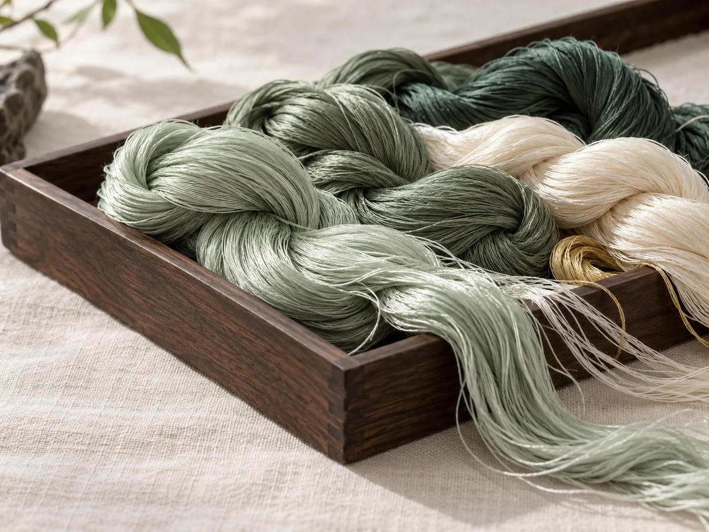

梨花季·译绣 绣
B. 绢白馆藏 · 东方留白与苏绣工艺的当代表达
打开新版网站 ↗DESIGN DIRECTION / 01绢白
绢白
馆藏
以馆藏之心，重构苏绣的当代表达。以绢白为底，以青绿为意，让工艺在数字时代静静绽放。
克制雅致图录式大留白工艺细节东方极简

标题：开源宋体 · 正文：现代无衬线
细线描边 · 8px圆角 · 44px以上点击区域
不以纹饰堆砌东方，让针脚成为主角。
LIVE MOBILE INTERFACE · 可滚动与点击